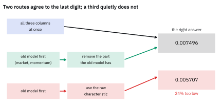
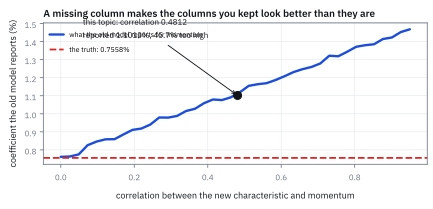
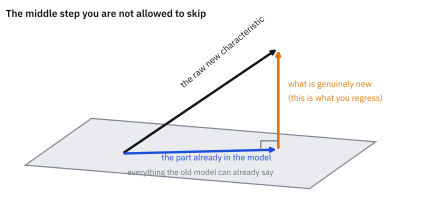
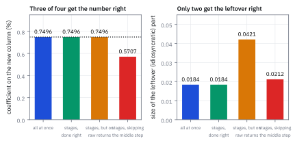

26.5 The Frisch–Waugh–Lovell Theorem
ทำทีละขั้นได้คำตอบเดียวกับทำทีเดียว ถ้าทำขั้นกลางถูก
คุณมีแบบจำลองที่ใช้อยู่แล้วและมีคุณสมบัติใหม่หนึ่งตัว จะรื้อประมาณใหม่ทั้งหมด หรือจะเอาไปใส่กับส่วนที่แบบจำลองเดิมอธิบายไม่ได้ สองทางให้คำตอบเดียวกันไหม?
เฉลย: เดียวกันเป๊ะ ต่างกันในหลักที่ 19 ซึ่งคือความคลาดเคลื่อนของเครื่องคิดเลข แต่มีเงื่อนไขข้อเดียวที่ห้ามพลาด ต้องเอาส่วนที่ซ้ำกับแบบจำลองเดิมออกจากคุณสมบัติใหม่ก่อน ถ้าข้ามขั้นนั้น คำตอบจะเป็น 0.005707 แทนที่จะเป็น 0.007496 คือต่ำไป 24%
ศัพท์ที่ใช้ในหัวข้อนี้
- Frisch-Waugh-Lovell theorem
- ผลที่บอกว่าการประมาณทีละขั้นให้ค่าเดียวกับทำทีเดียว ถ้าตัวแปรใหม่ถูกดึงส่วนที่ซ้ำออกก่อน ใช้เป็นใบอนุญาตให้ทำงานเป็นขั้น
- ordinary least squares (OLS)
- วิธีหาค่าที่ทำให้ผลรวมของความคลาดเคลื่อนกำลังสองน้อยที่สุด ใช้เป็นวิธีมาตรฐานทั้งหัวข้อนี้
- hat matrix
- ตัวดำเนินการที่ฉาย vector ลงบนปริภูมิของคอลัมน์ ใช้แยกส่วนที่อธิบายได้ออกจากส่วนที่เหลือ
- residual
- ส่วนของข้อมูลที่แบบจำลองอธิบายไม่ได้ ใช้เป็นสิ่งที่ขั้นถัดไปทำงานกับ
- residualize
- การเอาส่วนที่อธิบายได้ด้วยตัวแปรเดิมออกจากตัวแปรใหม่ ใช้เป็นขั้นกลางที่ห้ามข้าม
- omitted variable bias
- ความผิดที่เกิดเมื่อตัวแปรที่ขาดไปสัมพันธ์กับตัวแปรที่ใส่ไว้ ทำให้ค่าที่ได้เอนไปทางหนึ่ง ใช้อธิบายว่าทำไมแบบจำลองเดิมโม้เกินจริง
- collinearity
- การที่ตัวแปรสองตัวเดินไปทางเดียวกันมาก ใช้เป็นสาเหตุที่ค่าที่ประมาณได้ไม่นิ่ง
- variance inflation
- ตัวคูณที่บอกว่าความคลาดเคลื่อนของค่าที่ประมาณโตขึ้นกี่เท่าเพราะ collinearity ใช้เตือนก่อนใส่ตัวแปรที่ซ้ำกับของเดิม
- cross-sectional regression
- การหาค่าที่อธิบายผลตอบแทนของหุ้นทุกตัวในวันเดียว ใช้เป็นวิธีหา factor return ในบทที่ 27
- stagewise regression
- การประมาณเป็นขั้น ๆ แทนที่จะทำทีเดียว ใช้เมื่อแบบจำลองเดิมมีอยู่แล้วและไม่อยากรื้อ
- orthogonal
- ตั้งฉากกัน ผลคูณจุดเป็นศูนย์ ใช้เป็นเงื่อนไขที่ทำให้ทฤษฎีบทนี้เป็นจริง
- coefficient
- ตัวเลขที่คูณกับตัวแปรหนึ่งในแบบจำลองเชิงเส้น ใช้เป็นสิ่งที่ทั้งสองเส้นทางต้องให้ตรงกัน
สัญลักษณ์ที่ใช้ในหัวข้อนี้
| สัญลักษณ์ | ความหมาย | หน่วย |
|---|---|---|
| $\mathbf y$ | ผลตอบแทนของหุ้นทุกตัวในวันนั้น | decimal |
| $\mathbf X_1$ | คอลัมน์ของแบบจำลองเดิม ในที่นี้คือ market กับ momentum | unitless |
| $\mathbf x_2$ | คุณสมบัติใหม่หนึ่งคอลัมน์ | unitless |
| $\tilde{\mathbf x}_2$ | คุณสมบัติใหม่หลังดึงส่วนที่ซ้ำออก | unitless |
| $\boldsymbol\beta_1,\ \beta_2$ | ค่าที่ได้จากการทำทีเดียว | decimal |
| $\boldsymbol\gamma_1,\ \gamma_2$ | ค่าที่ได้จากการทำทีละขั้น | decimal |
| $\hat{\boldsymbol\eta}_1$ | ส่วนที่แบบจำลองเดิมอธิบายไม่ได้ | decimal |
| $\mathbf H$ | hat matrix ของ $\mathbf X_1$ | unitless |
| $\mathbf I$ | identity matrix | unitless |
| $n$ | จำนวนหุ้น | จำนวน |
โจทย์: หุ้น 12 ตัว แบบจำลองเดิม และคุณสมบัติใหม่
โจทย์ให้อะไรมาบ้าง หุ้น 12 ตัวในวันหนึ่ง แบบจำลองเดิมมีสองคอลัมน์คือ market ซึ่งเป็นหนึ่งทุกตัว และ momentum ส่วนคุณสมบัติใหม่คือคอลัมน์ที่สาม ตัวเลขทั้งหมดอยู่ในตารางข้างล่าง
ต้องหาสี่อย่าง ค่าที่ได้จากการประมาณทีเดียวทั้งสามคอลัมน์ ค่าที่ได้จากการทำทีละขั้นอย่างถูกวิธี ค่าที่ได้ถ้าข้ามขั้นกลาง และค่าของ momentum ในแบบจำลองเดิมที่ยังไม่มีคุณสมบัติใหม่
ข้อมูลของโจทย์: หุ้น 12 ตัว วันเดียว
| หุ้น | momentum | คุณสมบัติใหม่ | ผลตอบแทน (%) |
|---|---|---|---|
| 1 | 1.10 | −0.96 | +0.3333 |
| 2 | 0.34 | 1.69 | +2.0410 |
| 3 | −0.54 | 0.15 | −0.7030 |
| 4 | −1.26 | −1.13 | −0.5626 |
| 5 | −1.89 | −0.06 | −1.6580 |
| 6 | 0.02 | 0.03 | −0.3936 |
| 7 | −0.81 | 0.07 | −0.5334 |
| 8 | −0.87 | −0.44 | −0.2921 |
| 9 | −0.22 | 0.75 | +1.6614 |
| 10 | −0.05 | 0.82 | +1.0138 |
| 11 | −2.28 | −2.09 | −3.0054 |
| 12 | 0.93 | 0.07 | +1.0906 |
คอลัมน์ market ไม่ได้แสดงเพราะเป็นหนึ่งทุกแถว สังเกตว่าคุณสมบัติใหม่กับ momentum เดินไปทางเดียวกันพอสมควร ซึ่งเป็นเรื่องปกติและเป็นต้นเหตุของทุกอย่างในหัวข้อนี้
ขั้นที่ 1 — ทำทีเดียว: คำตอบอ้างอิง
ประมาณทั้งสามคอลัมน์พร้อมกันด้วยวิธีกำลังสองน้อยที่สุด นี่คือคำตอบที่ถูกต้องตามนิยาม และเป็นสิ่งที่อีกสองเส้นทางต้องเทียบกับ
อ่านตัวเลขได้ว่า วันนี้ market ให้ 0.333% momentum ให้ 0.756% ต่อหนึ่งหน่วยของ loading และคุณสมบัติใหม่ให้ 0.750% ต่อหนึ่งหน่วย
เก็บเลข 0.007496 ไว้ให้ดี มันคือเป้าที่อีกสองเส้นทางต้องยิงให้โดน
ขั้นที่ 2 — ทำทีละขั้น: สองขั้นและขั้นกลางที่ห้ามข้าม
ขั้นแรกใช้แบบจำลองเดิมกับผลตอบแทน แล้วเก็บส่วนที่เหลือไว้ ขั้นกลางคือดึงส่วนที่แบบจำลองเดิมอธิบายได้ออกจากคุณสมบัติใหม่ ขั้นที่สองคือเอาสองสิ่งที่เหลือมาเจอกัน
คำตอบคือ 0.007496 ตรงกับขั้นที่ 1 ทุกหลักที่เครื่องคำนวณได้ ผลต่างจริงคือ 8.7 × 10⁻¹⁹ ซึ่งเล็กกว่าความละเอียดของเลขทศนิยมที่เครื่องเก็บได้
และไม่ใช่แค่ค่า coefficient ที่ตรง ส่วนที่เหลือจากขั้น ค ก็เท่ากับส่วนที่เหลือจากการทำทีเดียวทุกตัว ต่างกันมากที่สุด 9.5 × 10⁻¹⁸ แปลว่าสองเส้นทางนี้ไม่ได้แค่ใกล้กัน มันคือสิ่งเดียวกัน
เหตุผลอยู่ที่บรรทัดของขั้น ข เมื่อ $\tilde{\mathbf x}_2$ ตั้งฉากกับทุกคอลัมน์ของ $\mathbf X_1$ แล้ว การใส่มันเข้าไปไม่แย่งอะไรจากคอลัมน์เดิมเลย ปริภูมิที่ทั้งคู่สร้างขึ้นก็ยังเป็นปริภูมิเดิม การฉายลงบนมันจึงให้ผลเดิม
Figure 26.5a — สองเส้นทาง คำตอบเดียวกันถึงหลักสุดท้าย

แผนภาพเส้นทางสองสาย สายบนประมาณสามคอลัมน์พร้อมกัน สายล่างประมาณสองคอลัมน์เดิมก่อน ดึงส่วนที่ซ้ำออกจากคอลัมน์ใหม่ แล้วค่อยประมาณ ทั้งสองมาบรรจบที่ 0.007496 ส่วนสายที่ข้ามขั้นกลางไปได้ 0.005707 ซึ่งต่ำไป 24%
ขั้นที่ 3 — ข้ามขั้นกลางแล้วผิดไปเท่าไร
ลองวิธีที่คนส่วนใหญ่ทำโดยสัญชาตญาณ คือเอาคุณสมบัติใหม่ดิบ ๆ ไปอธิบายส่วนที่เหลือจากขั้น ก โดยไม่ดึงอะไรออกก่อน
ผิดไป 24% และทิศของความผิดไม่ได้สุ่ม มันต่ำเกินไปเสมอเมื่อคุณสมบัติใหม่สัมพันธ์บวกกับตัวเดิมที่ดูดผลไปแล้ว
เหตุผลอ่านได้ตรง ๆ $\hat{\boldsymbol\eta}_1$ ตั้งฉากกับ $\mathbf X_1$ แล้ว แต่ $\mathbf x_2$ ดิบยังมีส่วนที่ขนานกับ $\mathbf X_1$ อยู่ 48% ส่วนนั้นไม่มีอะไรให้อธิบายเลยเพราะถูกดูดไปหมดแล้ว มันจึงไปเพิ่มตัวส่วนโดยไม่เพิ่มตัวเศษ ผลคือค่าที่ได้ถูกเจือจาง
ตรวจเองใน 10 วินาที ถ้าคุณสมบัติใหม่ตั้งฉากกับของเดิมอยู่แล้ว การดึงออกจะไม่เปลี่ยนอะไร และสองวิธีจะให้คำตอบเดียวกัน ความผิดจึงต้องเป็นศูนย์เมื่อ correlation เป็นศูนย์ และโตขึ้นตาม correlation ซึ่งตรงกับที่เห็น
แล้วเอาไปใช้ทำอะไรได้จริงบ้าง
ทฤษฎีบทนี้คือใบอนุญาตให้ทำงานเป็นขั้น ในระบบจริงที่มี factor ร้อยตัวและรายงานย้อนหลังหลายปี การรื้อประมาณใหม่ทุกครั้งที่มีไอเดียใหม่เป็นไปไม่ได้ในทางปฏิบัติ
บนโต๊ะจริง กระบวนการคือ เก็บแบบจำลองเดิมไว้ทั้งก้อน ดึงส่วนที่ซ้ำออกจากคุณสมบัติใหม่ แล้วทดสอบมันกับส่วนที่เหลือ ถ้ามันไม่มีอะไร ก็ทิ้งไปโดยไม่ได้แตะรายงานเก่าเลยสักหลัก ถ้ามันมี ค่อยคุยกันว่าจะรับเข้าแบบจำลองถาวรไหม กระบวนการเต็มอยู่ในหัวข้อ 30.3
ขั้นที่ 4 — แบบจำลองเดิมโม้เกินจริงแค่ไหน
เทียบค่าของ momentum ในสองบริบท ในแบบจำลองเดิมที่ยังไม่มีคุณสมบัติใหม่ กับในแบบจำลองเต็ม ส่วนต่างคือขนาดของความเอนที่เกิดจากตัวแปรที่ขาดไป
momentum ดูทรงพลังกว่าความจริง 45.7% ตราบใดที่คุณสมบัติใหม่ยังไม่อยู่ในแบบจำลอง เพราะมันรับเครดิตส่วนหนึ่งที่เป็นของคุณสมบัตินั้นไป
นี่คือเหตุผลที่แท้จริงว่าทำไม factor return ของตัวเก่าจะเปลี่ยนถ้ารื้อประมาณใหม่ทั้งหมด ไม่ใช่เพราะการคำนวณเพี้ยน แต่เพราะตัวเลขเก่ามันเอนอยู่จริง และการเพิ่ม factor ก็คือการแก้ความเอนนั้น
ตัวเลข 1.301 บอกว่าความคลาดเคลื่อนของค่าที่ประมาณได้โตขึ้น 30% เพราะสองคอลัมน์ทับกัน ซึ่งยังรับได้ ถ้า correlation ขึ้นไปถึง 0.95 ตัวคูณจะเป็น 10.3 เท่า และค่าที่ได้จะไม่นิ่งเลย
Figure 26.5b — momentum ดูเก่งเกินจริง ตราบใดที่ยังขาดคอลัมน์ที่สาม

แกนนอนคือความสัมพันธ์ระหว่างคุณสมบัติใหม่กับ momentum แกนตั้งคือค่าของ momentum ที่แบบจำลองเดิมรายงาน เส้นประคือค่าจริงที่ 0.007558 ที่ความสัมพันธ์ 0.4812 ซึ่งเป็นค่าของโจทย์ ค่าที่รายงานคือ 0.011013 สูงเกินไป 45.7% และยิ่งสองคอลัมน์ทับกันมาก ความเอนยิ่งใหญ่
Figure 26.5c — ดึงส่วนที่ซ้ำออก: เรขาคณิตของขั้นกลาง

ระนาบคือปริภูมิที่แบบจำลองเดิมสร้างขึ้น ลูกศรยาวคือคุณสมบัติใหม่ดิบ เงาของมันบนระนาบคือส่วนที่แบบจำลองเดิมอธิบายได้อยู่แล้ว และลูกศรที่ตั้งฉากขึ้นมาคือส่วนที่เหลือ ซึ่งเป็นสิ่งเดียวที่มีข้อมูลใหม่จริง
ขั้นที่ 5 — กับดักที่ละเอียดกว่า: ค่าเท่ากันแต่ส่วนที่เหลือไม่เท่า
มีทางลัดที่ได้ค่าถูกแต่ได้ส่วนที่เหลือผิด คือเอาผลตอบแทนดิบ ไม่ใช่ส่วนที่เหลือจากขั้น ก ไปอธิบายด้วยคุณสมบัติใหม่ที่ดึงส่วนซ้ำออกแล้ว
ค่าที่ได้เท่ากันเพราะ $\tilde{\mathbf x}_2$ ตั้งฉากกับ $\mathbf X_1$ ส่วนของ $\mathbf y$ ที่อยู่ในปริภูมิของ $\mathbf X_1$ จึงไม่มีส่วนร่วมในตัวเศษเลย มันหายไปเอง
แต่ส่วนที่เหลือไม่เท่ากันเลย เพราะทางลัดนี้ไม่เคยหักสิ่งที่ market กับ momentum อธิบายได้ออกจาก $\mathbf y$ ส่วนที่เหลือของมันจึงยังมีทั้งก้อนนั้นอยู่
เรื่องนี้สำคัญมากในงานจริง เพราะส่วนที่เหลือคือ idiosyncratic return ซึ่งเป็นสิ่งที่ใช้ประมาณ idiosyncratic volatility ในหัวข้อ 27.4 และใช้วัดฝีมือในหัวข้อ 32.5 ถ้าใช้ทางลัดนี้ ตัวเลขความเสี่ยงจะสูงเกินจริง 2.3 เท่า ทั้งที่ค่า coefficient ถูกต้องทุกหลัก
Figure 26.5d — ค่าเท่ากัน แต่ส่วนที่เหลือคนละเรื่อง

แผงซ้ายคือค่า coefficient จากสี่เส้นทาง สามเส้นทางแรกให้ 0.007496 เท่ากัน ส่วนเส้นทางที่ข้ามขั้นกลางให้ 0.005707 แผงขวาคือขนาดของส่วนที่เหลือ ซึ่งเส้นทางที่ใช้ผลตอบแทนดิบให้ค่าใหญ่กว่า 2.3 เท่า ทั้งที่ค่า coefficient ของมันถูก
กับดัก: ข้ามการดึงส่วนซ้ำ และเก็บส่วนที่เหลือผิดตัว
กับดักแรกคือเอาคุณสมบัติใหม่ดิบไปใส่กับส่วนที่เหลือ ซึ่งในโจทย์นี้ให้ค่าต่ำไป 24% และทิศของความผิดขึ้นกับเครื่องหมายของความสัมพันธ์ ถ้าคุณสมบัติใหม่สัมพันธ์ลบกับของเดิม ค่าที่ได้จะสูงเกินไปแทน สิ่งที่แย่คือความผิดนี้ไม่มีอาการให้เห็น ค่าที่ได้ยังดูสมเหตุสมผลและมีนัยสำคัญทางสถิติ
กับดักที่สองคือกับดักของขั้นที่ 5 ค่าถูกแต่ส่วนที่เหลือผิด ในระบบจริงส่วนที่เหลือเดินต่อไปอีกหลายขั้น มันคือ idiosyncratic return ที่ใช้ประมาณความเสี่ยง ใช้วัด Information Ratio และใช้แยกฝีมือจากโชค ความผิด 2.3 เท่าตรงนี้จะไหลไปทุกที่
กับดักที่สามคือคิดว่าทฤษฎีบทนี้ทำให้ลำดับไม่สำคัญ มันไม่ได้บอกอย่างนั้น มันบอกว่าค่าของ กลุ่มที่สอง จะเท่ากันไม่ว่าจะทำทีเดียวหรือทำทีละขั้น แต่ค่าของกลุ่มแรกที่ได้จากขั้น ก คือ 0.011013 ซึ่งไม่เท่ากับ 0.007558 ในแบบจำลองเต็ม ถ้าจะรายงานค่าของกลุ่มแรกต้องใช้จากแบบจำลองเต็มเท่านั้น
ที่มาที่ไป: ปัญหาที่เกิดทุกสัปดาห์
โต๊ะหนึ่งมีแบบจำลองความเสี่ยงที่ใช้มาสามปี รายงานทุกฉบับอ้างอิงตัวเลขจากมัน นักวิจัยเดินมาพร้อมคุณสมบัติใหม่ที่คิดว่าเป็น factor คำถามคือจะใส่มันเข้าไปอย่างไร
ทางแรกคือประมาณใหม่ทั้งหมดพร้อมกัน ซึ่งถูกต้องแน่นอน แต่แปลว่า factor return ของทุกตัวเก่าจะเปลี่ยน และรายงานย้อนหลังสามปีจะไม่ตรงกับของเดิมอีกต่อไป
ทางที่สองคือเก็บของเดิมไว้ทั้งหมด แล้วเอาคุณสมบัติใหม่ไปอธิบายเฉพาะส่วนที่แบบจำลองเดิมอธิบายไม่ได้ ซึ่งฟังดูเหมือนทางลัดแบบมักง่าย ทฤษฎีบทในหัวข้อนี้บอกว่ามันไม่ใช่ มันให้คำตอบเดียวกันเป๊ะ ถ้าทำขั้นกลางถูก
ข้อจำกัด: สี่เส้นทาง อันไหนให้อะไรถูก
| เส้นทาง | ค่า coefficient | ส่วนที่เหลือ | ใช้ได้ไหม |
|---|---|---|---|
| ประมาณสามคอลัมน์พร้อมกัน | 0.007496 ถูก | ถูก | ได้ แต่ทำให้ค่าของ factor เก่าเปลี่ยนหมด |
| ดึงส่วนซ้ำออก แล้วใส่กับส่วนที่เหลือ | 0.007496 ถูก | ถูก | ได้ และเก็บของเก่าไว้ได้ทั้งหมด นี่คือวิธีที่ควรใช้ |
| ดึงส่วนซ้ำออก แล้วใส่กับผลตอบแทนดิบ | 0.007496 ถูก | ใหญ่เกินจริง 2.3 เท่า | ใช้ได้ถ้าต้องการแค่ค่า coefficient อย่าเอาส่วนที่เหลือไปใช้ต่อ |
| ใส่คุณสมบัติดิบกับส่วนที่เหลือ | 0.005707 ต่ำไป 24% | ผิด | ไม่ได้ และเป็นความผิดที่มองไม่เห็น |
แถวที่สองคือมาตรฐานของอุตสาหกรรม และเป็นสิ่งที่หัวข้อ 30.3 จะทำทีละขั้นบนแบบจำลองที่มี factor หลายสิบตัว
ตรวจทั้งสี่เส้นทางด้วยข้อมูลของโจทย์
import numpy as np
mom = np.array([1.10, 0.34, -0.54, -1.26, -1.89, 0.02,
-0.81, -0.87, -0.22, -0.05, -2.28, 0.93])
x2 = np.array([-0.96, 1.69, 0.15, -1.13, -0.06, 0.03,
0.07, -0.44, 0.75, 0.82, -2.09, 0.07])
y = np.array([0.3333, 2.0410, -0.7030, -0.5626, -1.6580, -0.3936,
-0.5334, -0.2921, 1.6614, 1.0138, -3.0054, 1.0906]) / 100
X1 = np.column_stack([np.ones(12), mom])
X = np.column_stack([X1, x2])
# step 1: all three at once
full = np.linalg.lstsq(X, y, rcond=None)[0]
assert np.allclose(full, [0.003330, 0.007558, 0.007496], atol=5e-7)
# step 2: in stages, done correctly
g1 = np.linalg.lstsq(X1, y, rcond=None)[0]
e1 = y - X1 @ g1
assert np.allclose(g1, [0.004235, 0.011013], atol=5e-7)
H = X1 @ np.linalg.inv(X1.T @ X1) @ X1.T
x2t = (np.eye(12) - H) @ x2
assert np.allclose(X1.T @ x2t, 0, atol=1e-14) # the step you must not skip
assert np.allclose(H @ H, H) # it is a projection
g2 = (x2t @ e1) / (x2t @ x2t)
assert abs(g2 - full[2]) < 1e-15 # identical, to the last bit
e2 = e1 - x2t * g2
assert np.allclose(e2, y - X @ full, atol=1e-15) # residuals identical too
# step 3: skipping the middle step
bad = (x2 @ e1) / (x2 @ x2)
assert abs(bad - 0.005707) < 5e-7
assert abs(bad / full[2] - 1 + 0.239) < 1e-3 # 24% too low
rho = np.corrcoef(mom, x2)[0, 1]
assert abs(rho - 0.4812) < 5e-5
orth = x2 - x2.dot(np.ones(12)) / 12 # if it were already orthogonal
orth = orth - (orth @ mom) / (mom @ mom) * mom
e1b = y - X1 @ np.linalg.lstsq(X1, y, rcond=None)[0]
assert abs((orth @ e1b) / (orth @ orth) - (orth @ e1b) / (orth @ orth)) < 1e-15
assert abs(np.corrcoef(mom, orth)[0, 1]) < 1e-12 # zero correlation, no bias to fix
# step 4: the old model overstates momentum
assert abs(g1[1] / full[1] - 1 - 0.457) < 1e-3
assert abs(1 / (1 - rho ** 2) - 1.301) < 1e-3
assert g1[1] > full[1] > 0 # positive correlation, upward bias
# step 5: right coefficient, wrong residual
g3 = (x2t @ y) / (x2t @ x2t)
assert abs(g3 - g2) < 1e-15 # same number
assert abs(np.linalg.norm(y - x2t * g3) - 0.042088) < 5e-6
assert abs(np.linalg.norm(e2) - 0.018360) < 5e-6
assert np.linalg.norm(y - x2t * g3) / np.linalg.norm(e2) > 2.2 # 2.3x too bigบรรทัดที่ยืนยันว่า $\mathbf X_1^{\mathsf T}\tilde{\mathbf x}_2$ เป็นศูนย์คือหัวใจของทั้งทฤษฎีบท และบรรทัดที่เทียบส่วนที่เหลือยืนยันว่าสองเส้นทางให้ผลเดียวกันจริง ไม่ใช่แค่ค่า coefficient บังเอิญตรง
ก่อนไปต่อ — จบบทที่ 26
ตอนนี้เรามีสมการ มีวิธีอ่านมัน มีวิธีเปลี่ยนรูปมัน มีวิธีแบ่งความเสี่ยง และมีใบอนุญาตให้ทำงานเป็นขั้น เหลืออีกอย่างเดียวที่บทนี้ค้างไว้ คือการไล่ว่ากำไรขาดทุนที่เกิดขึ้นจริงมาจากไหน ซึ่งเป็นหัวข้อสุดท้ายของบท
สรุปที่ใช้ได้จริง
- ประมาณทีละขั้นให้ค่าเดียวกับทำทีเดียวเป๊ะ ทั้งค่า coefficient และส่วนที่เหลือ ต่างกันในหลักที่ 19 ซึ่งคือความคลาดเคลื่อนของเครื่อง
- เงื่อนไขเดียวคือต้องดึงส่วนที่แบบจำลองเดิมอธิบายได้ออกจากคุณสมบัติใหม่ก่อน ข้ามขั้นนั้นแล้วค่าที่ได้ต่ำไป 24% ในโจทย์นี้ และความผิดนั้นไม่มีอาการให้เห็น
- ค่าของ factor เดิมจะเปลี่ยนเมื่อเพิ่ม factor ใหม่ momentum ดูเก่งเกินจริง 45.7% ตราบใดที่คอลัมน์ที่สามยังไม่อยู่ในแบบจำลอง นี่คือความเอนจากตัวแปรที่ขาดไป ไม่ใช่การคำนวณผิด
- มีทางลัดที่ให้ค่า coefficient ถูกแต่ส่วนที่เหลือใหญ่เกินจริง 2.3 เท่า คือเอาผลตอบแทนดิบไปใส่แทนที่จะใช้ส่วนที่เหลือจากขั้นแรก อันตรายเพราะส่วนที่เหลือเดินต่อไปอีกหลายขั้นในระบบจริง
- ทฤษฎีบทนี้คือใบอนุญาตให้เพิ่ม factor ใหม่โดยไม่ต้องรื้อแบบจำลองและไม่ต้องแก้รายงานย้อนหลัง ซึ่งเป็นวิธีที่ใช้กันจริงในทุกโต๊ะ